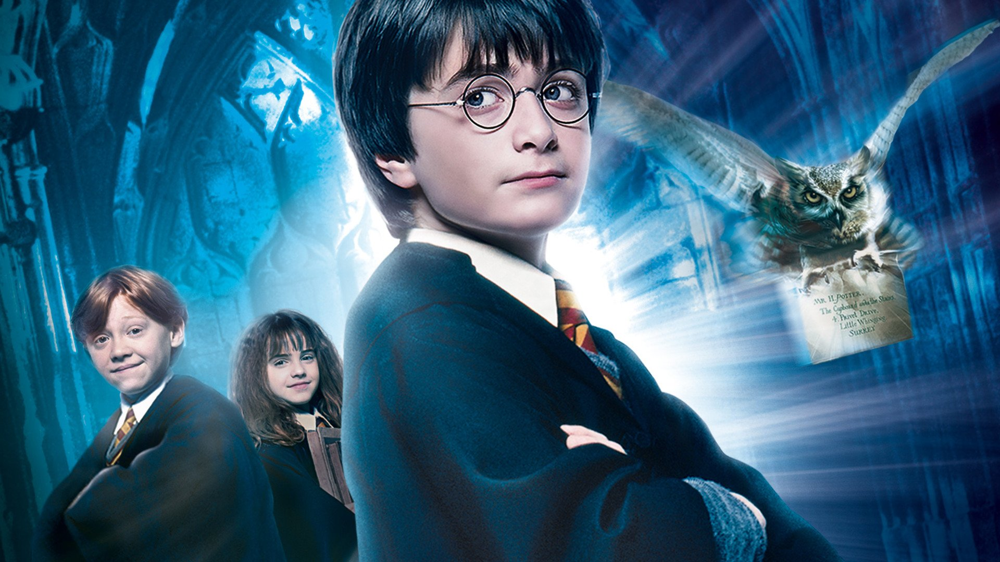

Harry
Potter
-
More
Carousel
About The Book
Harry Potter and the Philosopher's Stone is a fantasy novel written by British author J. K. Rowling. The first novel in the Harry Potter series and Rowling's debut novel, it follows Harry Potter, a young wizard who discovers his magical heritage on his eleventh birthday, when he receives a letter of acceptance to Hogwarts School of Witchcraft and Wizardry. Harry makes close friends and a few enemies during his first year at the school, and with the help of his friends, Harry faces an attempted comeback by the dark wizard Lord Voldemort, who killed Harry's parents, but failed to kill Harry when he was just 15 months old.
The book was first published in the United Kingdom on 26 June 1997 by Bloomsbury. It was published in the United States the following year by Scholastic Corporation under the title Harry Potter and the Sorcerer's Stone. It won most of the British book awards that were judged by children and other awards in the US. The book reached the top of the New York Times list of best-selling fiction in August 1999 and stayed near the top of that list for much of 1999 and 2000. It has been translated into at least 73 other languages, and has been made into a feature-length film of the same name, as have all six of its sequels.
Summary
Ten-year-old Harry Potter is an orphan who lives in the fictional London suburb of Little Whinging, Surrey, with the Dursleys: his uncaring Aunt Petunia, loathsome Uncle Vernon, and spoiled cousin Dudley. The Dursleys barely tolerate Harry, and Dudley bullies him. One day Harry is astonished to receive a letter addressed to him in the cupboard under the stairs (where he sleeps). Before he can open the letter, however, Uncle Vernon takes it. Letters for Harry subsequently arrive each day, in increasing numbers, but Uncle Vernon tears them all up, and finally, in an attempt to escape the missives, the Dursleys go to a miserable shack on a small island. On Harry’s 11th birthday, a giant named Hagrid arrives and reveals that Harry is a wizard and that he has been accepted at the Hogwarts School of Witchcraft and Wizardry. He also sheds light on Harry’s past, informing the boy that his parents, a wizard and a witch, were killed by the evil wizard Voldemort and that Harry acquired the lightning-bolt scar on his forehead during the fatal confrontation.
Upon arrival at the school, the students are sorted into one of four houses—Gryffindor, Hufflepuff, Ravenclaw, or Slytherin. Harry ends up in Gryffindor, and during his eventful first year at Hogwarts he becomes close friends with two other members of the house, Ron Weasley, who comes from an old wizarding family, and Hermione Granger, whose parents are Muggles (those who are not magical). Harry also finds that he has an enemy in Draco Malfoy (Slytherin). In addition, Harry’s prowess in flying on a broomstick makes him a star of Gryffindor’s Quidditch team. Hoping to get Harry and his friends into trouble, Draco tricks them into leaving their rooms one night, a violation of school rules. While trying to avoid being caught, they discover a three-headed dog guarding a trapdoor. Harry gradually comes to the conclusion that Professor Snape, who teaches Potions, dislikes him intensely and is trying to get hold of whatever is behind the trapdoor. Harry receives his father’s cloak of invisibility as a Christmas gift, and, while exploring under the cloak’s cover, he finds the Mirror of Erised, in which he can see his parents. Later, headmaster Albus Dumbledore explains that the mirror shows the viewer’s deepest desire.
About The Book
Harry Potter and the Chamber of Secrets is a fantasy novel written by British author J. K. Rowling and the second novel in the Harry Potter series. The plot follows Harry's second year at Hogwarts School of Witchcraft and Wizardry, during which a series of messages on the walls of the school's corridors warn that the "Chamber of Secrets" has been opened and that the "heir of Slytherin" would kill all pupils who do not come from all-magical families. These threats are found after attacks which leave residents of the school petrified. Throughout the year, Harry and his friends Ron and Hermione investigate the attacks.
The book was published in the United Kingdom on 2 July 1998 by Bloomsbury and later, in the United States on 2 June 1999 by Scholastic Inc. Although Rowling says she found it difficult to finish the book, it won high praise and awards from critics, young readers and the book industry, although some critics thought the story was perhaps too frightening for younger children. Much like with other novels in the series, Harry Potter and the Chamber of Secrets triggered religious debates; some religious authorities have condemned its use of magical themes, while others have praised its emphasis on self-sacrifice and on the way in which a person's character is the result of the person's choices.
Summary
On Harry Potter's twelfth birthday, the Dursley family—Harry's uncle Vernon, aunt Petunia, and cousin Dudley—hold a dinner party for a potential client of Vernon's drill-manufacturing company. Harry is not invited, but is content to spend the evening quietly in his bedroom, although he is confused why his school friends have not sent cards or presents. However, when he goes to his room, a house-elf named Dobby warns him not to return to Hogwarts and admits to intercepting Harry's post from his friends. Having failed to persuade Harry to voluntarily give up his place at Hogwarts, Dobby then attempts to get him expelled by using magic to smash Petunia's dessert on the kitchen floor and framing it on Harry, who is not allowed to use magic out of school. Uncle Vernon's business deal falls through, but Harry is given a second chance from the Ministry of Magic, and allowed to return at the start of the school year.
In the meantime, Uncle Vernon punishes Harry, fitting locks to his bedroom door and bars to the windows. However, Ron Weasley arrives with his twin brothers Fred and George, in their father Arthur’s enchanted Ford Anglia. They rescue Harry, who stays at the Weasley's family home, the Burrow, for the remainder of his holidays. Harry and the other Weasleys—mother Molly, third eldest son Percy, and daughter Ginny (who has a crush on Harry)—travel to Diagon Alley. They are then reunited with Hermione Granger and introduced to Lucius Malfoy, father of Harry’s school nemesis Draco, and Gilderoy Lockhart, a conceited autobiographer who has been appointed Defence Against the Dark Arts professor after the death of Professor Quirrell. When Harry and Ron approach Platform 9 3/4 in King's Cross station it refuses to allow them to pass. They decide to fly Arthur’s car to Hogwarts, where they crash into a sentient willow tree on the grounds.

About The Book
Harry Potter and the Prisoner of Azkaban is a fantasy novel written by British author J. K. Rowling and the third in the Harry Potter series. The book follows Harry Potter, a young wizard, in his third year at Hogwarts School of Witchcraft and Wizardry. Along with friends Ronald Weasley and Hermione Granger, Harry investigates Sirius Black, an escaped prisoner from Azkaban who they believe is one of Lord Voldemort's old allies.
The book was published in the United Kingdom on 8 July 1999 by Bloomsbury and in the United States on 8 September 1999 by Scholastic Inc.[1][2][3][4] Rowling found the book easy to write, finishing it just a year after she had begun writing it. The book sold 68,000 copies in just three days after its release in the United Kingdom and since has sold over three million in the country.[5] The book won the 1999 Whitbread Children's Book Award, the Bram Stoker Award, and the 2000 Locus Award for Best Fantasy Novel, and was short-listed for other awards, including the Hugo.
Summary
Harry is back at the Dursleys for the summer holidays, where he sees on Muggle television that a convict named Sirius Black has escaped, though with no mention of what facility he has broken out of. Harry involuntarily inflates Aunt Marge when she comes to visit after she insults Harry and his parents. This leads to his running away and being picked up by the Knight Bus. He travels to the Leaky Cauldron where he meets Cornelius Fudge, the Minister for Magic, who asks Harry to stay in Diagon Alley for the remaining three weeks before the start of the school year at Hogwarts. While there, he meets his best friends Ron Weasley and Hermione Granger.
The night before Harry is expected to leave for Hogwarts, he learns from Arthur Weasley that Sirius Black is a convicted murderer in the wizarding world, and he warns Harry that it is believed Black will attempt to murder Harry next. On the way to Hogwarts a Dementor boards the train, causing Harry to faint. Following the incident, Harry is helped by the new Defence Against the Dark Arts teacher Remus Lupin. Harry, Ron, and Hermione learn that the Dementors will be patrolling the school in an attempt to catch Black.
Later on, Lupin's Defence Against the Dark Arts sessions prove far better than those of Gilderoy Lockhart (Harry's uselessly vain ex-teacher). They have a fun lesson on Boggarts and then learn about more Dark Creatures. When Lupin supposedly falls ill, the much hated Potions Master Professor Snape temporarily takes over teaching Defence Against the Dark Arts and torments the class, much to their dismay.
At Hogwarts, Harry has several problems with the Dementors, including an episode at a Quidditch match during which he faints and falls off his broomstick from high in the air. His broom is blown away and smashed by the Whomping Willow. Working with Harry outside class, Lupin teaches him the Patronus Charm to repel Dementors.
On an unauthorised visit to the village of Hogsmeade (thanks to The Marauder's Map, given to him by George Weasley and Fred Weasley), Harry overhears some of his teachers talking with Fudge about Black. They reveal that Black was a friend of Harry's parents but he betrayed them and gave Voldemort access to their house. They also mention that Black killed twelve Muggles and his former friend Peter Pettigrew.
About The Book
Harry Potter and the Goblet of Fire is a fantasy book written by British author J. K. Rowling and the fourth novel in the Harry Potter series. It follows Harry Potter, a wizard in his fourth year at Hogwarts School of Witchcraft and Wizardry and the mystery surrounding the entry of Harry's name into the Triwizard Tournament, in which he is forced to compete.
The book was published in the United Kingdom by Bloomsbury and in the United States by Scholastic; in both countries the release date was 8 July 2000, the first time a book in the series was published in both countries at the same time. The novel won a Hugo Award, the only Harry Potter novel to do so, in 2001. The book was adapted into a film, which was released worldwide on 18 November 2005, and a video game by Electronic Arts.
Summary
The book opens with Harry seeing Frank Bryce, the Muggle groundskeeper for the Riddle House, being killed by Lord Voldemort in a vision, and is awoken by his scar hurting. The Weasleys then take Harry and Hermione Granger to the Quidditch World Cup, using a Portkey, to watch Ireland versus Bulgaria, with Ireland emerging victorious. There, Harry meets Cedric Diggory, who is attending the match with his father. After the match, Voldemort's Death Eaters attack the site, destroying spectators' tents and wreaking havoc. The Dark Mark gets fired into the sky, which leads to a panic since it is the first time the sign has been seen in 13 years. Winky, Barty Crouch Senior's house elf, is falsely accused of casting the Mark after she is found holding Harry's wand, which is revealed to have been used to cast the Mark, as Harry had lost it during the chaos of the Death Eaters' attack. Hermione, angry at this injustice, forms a society to promote the rights of house elves known as S.P.E.W. (Society for the Promotion of Elvish Welfare).
After the sorting at Hogwarts, Professor Dumbledore announces that Alastor "Mad-Eye" Moody will be the Defence Against the Dark Arts teacher for the year, and also that Hogwarts will host the Triwizard Tournament, with a prize of one thousand gold Galleons. However, only those over 17—the age of majority in the wizarding world—will be allowed to enter. It is the first time in many years that the Triwizard Tournament will be held.[citation needed] Students from Beauxbatons Academy and the Durmstrang Institute, other wizarding academies, will travel to Hogwarts, where they will stay for the year, in hopes of competing. At Halloween, the Goblet of Fire picks Fleur Delacour from Beauxbatons Academy, Viktor Krum (who is also the Seeker on Bulgaria's Quidditch team) from Durmstrang Institute, and Cedric Diggory from Hogwarts to compete in the tournament. However, it additionally gives a fourth name—Harry Potter—leading to suspicion and indignation from everyone and magically binding Harry to compete. Ron is jealous that Harry is once again in the limelight and refuses to speak to Harry.
Hagrid reveals to Harry that the first task involves dragons, and since Fleur and Krum's headmasters are also aware of this, and will surely tell them in advance, Harry informs Cedric as well. At the task, Harry has to pass a Hungarian Horntail to retrieve a golden egg that contains a hint to the next task, which he does by summoning his Firebolt broomstick with the Accio spell, and finishes the task tied for first with Krum. Ron and Harry subsequently reconcile, Ron now understanding the full danger of the tournament. When Harry opens the egg, though, it merely shrieks loudly. Hermione then takes Harry and Ron to the school kitchens, where house elves work. There, they meet a distraught Winky, who is struggling to get over the loss of her sacking. They also meet Harry's old friend Dobby, who has been employed at Hogwarts to work in the kitchens; he is the only known house elf to appreciate his freedom, despite his hardworking nature.
Meanwhile, gossipy reporter Rita Skeeter is writing scandalous articles of half-truths and outright fabrications in The Daily Prophet about those at Hogwarts, including Hermione, Harry, Hagrid, and Madame Maxime of Beauxbatons.

About The Book
Harry Potter and the Order of the Phoenix is a fantasy novel written by British author J. K. Rowling and the fifth novel in the Harry Potter series. It follows Harry Potter's struggles through his fifth year at Hogwarts School of Witchcraft and Wizardry, including the surreptitious return of the antagonist Lord Voldemort, O.W.L. exams, and an obstructive Ministry of Magic. The novel was published on 21 June 2003 by Bloomsbury in the United Kingdom, Scholastic in the United States, and Raincoast in Canada. Five million copies were sold in the first 24 hours of publication.[1] It is the longest book of the series.
Harry Potter and the Order of the Phoenix has won several awards, including being named an American Library Association Best Book for Young Adults in 2003. The book has also been made into a film, which was released in 2007, and into a video game by Electronic Arts.
Summary
During the summer holidays with his aunt Petunia and uncle Vernon, 15-year-old Harry Potter and his cousin Dudley are attacked by Dementors. After openly using magic to save Dudley and himself, Harry is almost expelled from Hogwarts, but the decision is later reversed after a hearing at the Ministry of Magic. Harry is whisked off by a group of wizards including Mad-Eye Moody, Professor Lupin, and several new faces, including Nymphadora Tonks, a bubbly young witch who is a Metamorphmagus (a wizard who can change their appearance without a potion or spell), and Kingsley Shacklebolt, a senior Auror, to Number 12, Grimmauld Place, the childhood home of his godfather, Sirius Black. The building also serves as the headquarters of the Order of the Phoenix, of which Mr. and Mrs. Weasley and Sirius are also members. Ron Weasley and Hermione Granger explain that the Order of the Phoenix is a secret organisation led by Hogwarts headmaster Albus Dumbledore, dedicated to fighting Lord Voldemort and his followers, the Death Eaters. From the members of the Order, Harry and the others learn that Voldemort is seeking an object that he did not have prior to his first defeat, and assume this object to be a weapon of some sort. Harry learns that the Ministry of Magic, led by Cornelius Fudge, is refusing to acknowledge Voldemort's return because of the panic and chaos that doing so would cause, and has been running a smear campaign against him and Dumbledore.
At Hogwarts, Harry learns that Dolores Umbridge, a senior employee in the Ministry of Magic, will be the new Defence Against the Dark Arts teacher. Umbridge and Harry clash, as she, like Fudge, refuses to believe that Voldemort has returned. She punishes Harry for his rebellious outbursts by having him write "I must not tell lies" with a cursed quill that carves the phrase into his skin. She also refuses to teach her students how to perform defensive spells, prompting Harry, Ron and Hermione to form their own Defence Against the Dark Arts group (with students from Gryffindor, Ravenclaw and Hufflepuff), which they call Dumbledore's Army. Many students sign up, including Neville Longbottom, Fred and George Weasley, Ginny Weasley and Luna Lovegood. The next day, however, they see on the notice board that Umbridge has banned all clubs that have not been approved by her. Struggling to find a place to practise, Dobby the house elf tells him about the Room of Requirement and its uses. The club meet there to learn and practise defensive spells under Harry's instruction.
Meanwhile, Rubeus Hagrid has not yet returned from the secret mission given to him by Dumbledore at the end of the previous book, and is absent for the first part of the school year. Upon his return, Harry, Ron, and Hermione learn that his mission, which was mostly unsuccessful, was to seek out the last giants to stop them from joining Lord Voldemort. Professor Umbridge has been steadily amassing more and more power and influence at the school, and as she begins regularly inspecting Hagrid's Care of Magical Creatures lessons, it is clear that she intends to get rid of him.

About The Book
Harry Potter and the Half-Blood Prince is a fantasy novel written by British author J. K. Rowling and the sixth and penultimate novel in the Harry Potter series. Set during protagonist Harry Potter's sixth year at Hogwarts, the novel explores the past of Harry's nemesis, Lord Voldemort, and Harry's preparations for the final battle against Voldemort alongside his headmaster and mentor Albus Dumbledore.
The book was published in the United Kingdom by Bloomsbury, and in the United States by Scholastic on 16 July 2005, as well as in several other countries. It sold nine million copies in the first 24 hours after its release, a record at the time which was eventually broken by its sequel, Harry Potter and the Deathly Hallows. There were many controversies before and after it was published, including the right to read the copies delivered prior to the release date in Canada. Reception to the novel was generally positive and it won several awards and honours, including the 2006 British Book of the Year award.
Summary
Dumbledore picks Harry up from his aunt and uncle's house, intending to escort him to the Burrow, home of Harry's best friend Ron, and his large family. On the way, they make a detour to the temporary home of Horace Slughorn, former Potions teacher at Hogwarts, and Harry unwittingly helps persuade Slughorn to return to teach. Harry and Dumbledore then proceed to the Burrow, where Hermione has already arrived.
Severus Snape, a member of the Order of the Phoenix, meets with Narcissa Malfoy, Draco's mother, and her sister Bellatrix Lestrange, Lord Voldemort's faithful supporter. Narcissa expresses her extreme concern that her son might not survive a dangerous mission, given to him by Lord Voldemort. Bellatrix feels Snape will be of no help until he surprises her by making an Unbreakable Vow with Narcissa, swearing on his life that he will protect and assist Draco in his mission.
The next morning, Harry, Ron, and Hermione get their Ordinary Wizarding Level (O.W.L.) results, along with lists of school supplies. Later, Harry, Ron Weasley and Hermione Granger follow Draco to Dark Arts supplier Borgin and Burkes in Knockturn Alley. Harry is instantly suspicious of Draco, whom he believes to be a Death Eater.
On the Hogwarts Express, Harry discusses his suspicions of Draco’s allegiance with Lord Voldemort, however Ron and Hermione are doubtful with the lack of evidence. Harry wears his invisibility cloak and hides in the same carriage that Malfoy is seated in. He overhears Draco bragging to his friends about the mission Lord Voldemort has tasked him. However, Malfoy is suspicious that someone else is in the carriage and discovers Harry Potter was listening to his conversation. He petrifies him and breaks his nose out of rage. Harry cannot get off the carriage, and is worried the Hogwarts Express will depart before he can move again. To his relief however, Nymphadora Tonks finds Harry and escorts him back to the castle during the opening feast.
The students return to school, where Dumbledore announces that Snape will be teaching Defence Against the Dark Arts. In the meantime, Horace Slughorn will resume his previous post as Potions teacher. Harry now excels in Potions, thanks to having received a used Potions textbook that once belonged to someone named "The Half-Blood Prince," a mysterious former student who wrote numerous tips and spells in his Potions textbook. Harry uses this information to achieve superb results. After a class contest, The Half-Blood Prince's tips help Harry win a bottle of Felix Felicis, more commonly known as "Liquid Luck." Though Harry's success pleases Slughorn, his newfound brilliance in potions angers Hermione, who feels he is not truly earning his grades and also does not trust the Half-Blood Prince.
About The Book
Harry Potter and the Deathly Hallows is a fantasy novel written by British author J. K. Rowling and the seventh and final novel of the Harry Potter series. The book was released on 21 July 2007, ending the series that began in 1997 with the publication of Harry Potter and the Philosopher's Stone. It was published in the United Kingdom by Bloomsbury Publishing, in the United States by Scholastic, and in Canada by Raincoast Books. The novel chronicles the events directly following Harry Potter and the Half-Blood Prince (2005) and the final confrontation between the wizards Harry Potter and Lord Voldemort.
Deathly Hallows shattered sales records upon release, surpassing marks set by previous titles of the Harry Potter series. It holds the Guinness World Record for most novels sold within 24 hours of release, with 8.3 million sold in the US alone and 2.65 million in the UK.[1][2] Generally well received by critics, the book won the 2008 Colorado Blue Spruce Book Award, and the American Library Association named it a "Best Book for Young Adults". A film adaptation of the novel was released in two parts: Harry Potter and the Deathly Hallows – Part 1 in November 2010, and Part 2 in July 2011.
Summary
Following Albus Dumbledore's death, Voldemort consolidates his support and power, including covert control of the Ministry of Magic, while Harry is about to turn seventeen, losing the protection of his home. The Order of the Phoenix move Harry to a new location before his birthday, but are attacked upon departure. In the ensuing battle, "Mad-Eye" Moody is killed and George Weasley wounded; Voldemort himself arrives to kill Harry, but Harry's wand fends him off of its own accord. Harry, Ron and Hermione make preparations to abandon Hogwarts and hunt down Voldemort's four remaining Horcruxes, but have few clues to work with as to their identities and locations. One is a locket once owned by Hogwarts' co-founder Salazar Slytherin which was stolen by the mysterious "R.A.B.", one is possibly a cup originally belonging to co-founder Helga Hufflepuff, a third might be connected to co-founder Rowena Ravenclaw, and the fourth might be Nagini, Voldemort's snake familiar. They also inherit strange bequests from among Dumbledore's possessions: a Golden Snitch for Harry, a Deluminator for Ron, and a book of short tales collectively called The Tales of Beedle the Bard for Hermione.
The trio attends Bill Weasley's wedding, but during the reception the Ministry of Magic finally falls to Voldemort and the wedding is attacked by Death Eaters. They flee to 12 Grimmauld Place in London, the family home of Sirius Black, that Harry had inherited a year before. Thanks to the house-elf Kreacher they identify R.A.B. as Sirius' deceased brother Regulus and learn that Slytherin's locket was stolen from the house by Mundungus Fletcher, the dubious member of the Order of the Phoenix and ultimately seized by Dolores Umbridge of the Ministry of Magic. They infiltrate the Ministry in disguise and take back the locket, but accidentally break the protection of 12 Grimmauld Place during their escape and must go on the run across the countryside. With no way to destroy the locket, they argue frequently under the object's evil influence, culminating in Ron abandoning Harry and Hermione.
Harry and Hermione continue the quest, discovering more about Dumbledore's past, including the death of Dumbledore's younger sister and his connection to the dark wizard Gellert Grindelwald. They travel to Godric's Hollow, Harry's birthplace and the place where his parents died, and meet the elderly magical historian Bathilda Bagshot, but she turns out to be Nagini in disguise, awaiting their arrival. The snake attacks Harry and again they barely escape, but Harry's wand is damaged beyond repair. Their luck finally appears to turn in the Forest of Dean. A mysterious silver doe Patronus appears and guides Harry to an icy pond containing the Sword of Hogwarts co-founder Godric Gryffindor, one of the few objects able to destroy Horcruxes. During Harry's attempt to recover the sword, the locket Horcrux tries to kill him. He is saved by Ron, who appears suddenly, takes the sword and uses it to destroy the locket.
In his encampment, Voldemort feels the Elder Wand is not performing as he expected. According to legend, its full allegiance must be won by killing the previous owner, and Voldemort reasons that as Snape killed Dumbledore, he will not be able to fully wield the wand's power until he kills Snape, which he does. Harry arrives as Snape is dying, and Snape passes him memories to view in a pensieve. They reveal Snape had a lifelong love for Harry's mother and felt haunted for causing her death, and despite hating Harry's father he agreed at Dumbledore's request to watch over Harry and act as a double agent against Voldemort. The doe Patronus that led Harry to the Sword was summoned by Snape, who was watching over them the whole time. It is revealed that Dumbledore was slowly dying after mishandling the ring horcrux, and he planned his "murder" with Snape in advance to prove Snape's allegiance to Voldemort. The memories also explain that Harry himself is a horcrux and must die at Voldemort's hand if Voldemort is to become mortal. Harry accepts his death and goes to the Forbidden Forest to allow Voldemort to kill him. On the way he mentions to Neville Longbottom that Voldemort's snake Nagini must be killed to make Voldemort vulnerable. He finally manages to open the Snitch and uses the Resurrection Stone within to seek comfort and courage from his dead loved ones—his parents, Sirius Black, and Lupin—dropping the Stone in the forest before reaching Voldemort's camp. Voldemort uses the Killing Curse and Harry does not defend himself.
Harry awakens in a dreamlike location resembling Kings Cross station and is greeted by Dumbledore, who explains that Voldemort's original Killing Curse left a fragment of Voldemort's soul in Harry, which caused the connection they had felt, making Harry an unintended Horcrux; this fragment had just been destroyed by Voldemort himself. When Voldemort used Harry's blood to regain his full strength, this further protected Harry from Voldemort, allowing Harry to return to life if he chooses, or to "go on". Harry chooses to return and feigns death. Narcissa Malfoy feels Harry's pulse and lies to Voldemort by stating he is dead after learning that Draco is still alive. Voldemort calls a truce and displays Harry's body, offering to spare most of the defenders if they surrender. Neville, however, pulls the Sword of Gryffindor out of the Sorting Hat and uses it to behead Nagini, leaving Voldemort unprotected, and Harry escapes under his cloak as the battle resumes.
In a final onslaught, Bellatrix is killed by Molly Weasley and Harry reveals to Voldemort that he is alive. He explains to Voldemort the Elder Wand's loyalty transfers upon the defeat, not necessarily the killing, of its previous master. Although Voldemort believes by killing Snape he has gained the Wand's loyalty, Snape was in fact never its master. Instead, Draco Malfoy inadvertently earned the Wand's loyalty when he disarmed Dumbledore just before Snape arrived to kill him. Therefore, Harry believes that their duel will depend on whether or not the Wand recognises Harry to be its new master after he disarmed Draco at Malfoy Manor weeks prior. Voldemort attempts one final Killing Curse on Harry, but the Elder Wand refuses to act against Harry and the spell rebounds, striking Voldemort and destroying him once and for all.
Harry uses the Elder Wand to repair his original wand, planning to return the Elder Wand to Dumbledore's tomb where its power may vanish if Harry dies undefeated and it can drop out of history. Harry does not intend to search for the Resurrection Stone he dropped in the Forbidden Forest, but will keep the Invisibility Cloak he inherited. The wizarding world returns to peace once more.